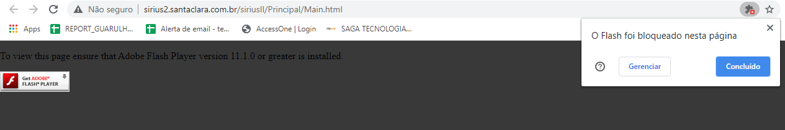

1. Pressione as teclas WINDOWS + R e digite o endereço \\192.168.58.10\instaladores\SIRIUS
2. Execute o arquivo SIRIUS WEB - AUTOMAÇÃO DE VENDAS, após isso o navegador ira abrir e então devemos liberar a execução do Flash
3. Clique no Flash e então clique na barra de endereço no simbolo da peça de quebra-cabeça e então clique no botão Concluído
4. Clique novamente no Flash e então clique no botão Permitir